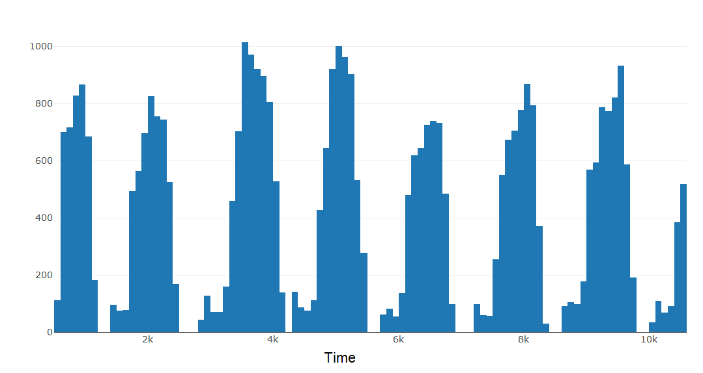

Overview
In this project, I was interested in exploring the spatial and temporal characteristics of tweets in London over a week-long time period. I analyzed the clustering patterns of approximately 40,000 tweets in both space and time. I found many clusters that could be linked to specific events taking place in the city. For example, I was able to detect events such as a West Ham vs Watford football game and an Adam Lambert concert.
Theories in spatiotemporal GIS
Any geospatial inquiry relating to phenomena such as movement, change, event, or process must consider both space and time. It is challenging, however, to combine spatial and temporal attributes of data to learn about spatiotemporal geographic phenomena. The metaphor of the map has been a longstanding conceptual framework for GIS and geography.1 As maps are largely static representations of geographic entities, frameworks for rigorous spatiotemporal analyses have often been overlooked.123
GIS often relies on the ‘snapshot’ model to communicate changes over space and time.4 With this model, change is identified by comparing various data layers sharing the same spatial extent but different temporal attributes. While this approach may be suitable for investigating phenomena such as land use change, it is insufficient in capturing the dynamic nature of phenomena such as events, movement, and process.
In this project I have attemped to move beyond this ‘snapshot’ model of spatiotemporal data analysis and representation. The approach presented in this project aligns with the aims of temporal GIS in that it challenges the primacy of static spatial representations and presents a means to more rigorously investigate time within a GIScience investigation.
The data
Data from location-based social networks and location-based services is emerging as a new way to study spatiotemporal processes and phenomena. I downloaded this dataset of 170,000 geotagged tweets from the UK. All tweets were initially collected between April 14-21, 2016. Data filtering and preprocessing reduced the size of this dataset down to approx 40,000 tweets.
Methods and results
I used R to create basic data visualizations to explore the spatial and temporal distribution of all the tweets in my dataset. For example, a histogram of the temporal distribution of tweets reveals a diurnal pattern, indicating that tweet frequency peaks at midday and falls during the evening. While some days reach a higher peak of tweet frequency than others, all days share a similar internal distribution.

I then detected spatio-temporal clusters using space-time scan statistics,5 implemented with the freely available SaTScan software. I selected the top 100 most statistically significant clusters and analyzed the text content of the tweets in each cluster to determine whether or not a given cluster corresponded to a real-world event. Overall, I found 18 clusters that corresponded to real events. The first figure in this post shows how each of these event clusters occupies a distinct spatio-temporal region.
These findings are likely due to increased concentrations of people tweeting during an event, from the same place and during the same time period.
- Goodchild, Michael F. “Combining space and time: New potential for temporal GIS.” Placing history: How maps, spatial data, and GIS are changing historical scholarship (2008): 179-197. [return]
- Langran, Gail, and Nicholas R. Chrisman. “A framework for temporal geographic information.” Cartographica: The International Journal for Geographic Information and Geovisualization 25.3 (1988): 1-14. [return]
- Peuquet, Donna J. “It’s about time: A conceptual framework for the representation of temporal dynamics in geographic information systems.” Annals of the Association of american Geographers 84.3 (1994): 441-461. [return]
- Worboys, Michael. “Event‐oriented approaches to geographic phenomena.” International Journal of Geographical Information Science 19.1 (2005): 1-28. [return]
- Kulldorff, Martin, et al. “A space–time permutation scan statistic for disease outbreak detection.” PLoS medicine 2.3 (2005): e59. [return]